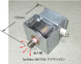

2024年
問題38 電場，磁場，電磁波に関する次の記述のうち， 最も不適当なものはどれか．
（1）電磁波を波長の長さ順に並べると電波が一番長く，その次が電離放射線で，光が一番短い．
（2）電離作用とは，原子又は分子が電子を放出することである．
（3）電磁波のうち，目でその存在を確認できるのは可視光線のみである．
（4）電流の流れるところには，電流に応じて必ず電磁場が発生する．
（5）家庭内の電波発生源として，電子レンジがある．
2024年
問題38 正解（1） 頻出度AAA
波長の長さは，電波＞光＞電離放射線である．
波長×周波数＝光速となって一定なので，周波数は電離放射線＞光＞電波となる（2024-38-1表参照）．
時間的に変動のない電場，磁場（それぞれ静電場，静磁場という）はお互いに独立して存在する一方，時間的に変動する磁場は電場を生み，時間的に変動する電場は磁場を生む．この時間的な電磁場の変化（振動）が空間を伝搬する現象を電磁波と呼ぶ．交流 50Hz の商用電源・電線からは 50Hz の電磁波が生じている．
電磁波は波長の長短（周波数の高低）によってその性質が著しく変化するので，その利用の仕方も異なってくる．
| 電磁波 | 電磁波の種類・名称 | 周波数 | 波長 | 用途・発生源 | ||
| 電離放射線 | ガンマ（γ）線 | 3,000万THz～ | 0.0001nm～ | 科学観測機器 | ||
| エックス（X）線 | 30,000～3,000万THz | 0.001～10nm | 医療機器（X線，CTスキャナ） | |||
| 非電離放射線 | 光 | 紫外線 | 789～ 30,000THz | 10nm～ 0.38μm | 殺菌・レーザ | |
| 可視光 | 384～789THz | 0.38～0.78μm | 光学機器 | |||
| 赤外線 | 3,000G～ 384THz | 0.78μm～ 0.1mm | 工業用（加熱・乾燥） | |||
| 電波 | サブミリ波 | 300～ 3,000GH | 0.1～1mm | 光通信システム | ||
| ミリ波（EHF） | 30～300GHz | 1mm～1cm | レーダ | |||
| センチ波（SHF） | 3～30GHz | 1～10cm | 衛星放送， マイクロウェーブ | |||
| 極超短波（UHF） | 300～ 3,000MHz | 10cm～1m | テレビ，電子レンジ， 携帯電話 | |||
| 超短波（VHF） | 30～300MHz | 1～10m | テレビ，FM放送， 業務無線 | |||
| 短波（HF） | 3～30MHz | 10～100m | 短波放送，国際放送，アマチュア無線 | |||
| 中波（MF） | 300～3,000kHz | 100～1,000m | ラジオ放送 | |||
| 長波（LF） | 30～300kHz | 1～10km | 日本標準時送信 | |||
| 超長波（VLF） | 3～30kHz | 10～100km | 電磁調理器 | |||
| （ULF） | 300～3,000Hz | 100～103km | － | |||
| 極超長波（ELF） | 3～300Hz | 103～105km | 家電製品 高圧送電線 | |||
※ ミリ波～極超短波を通称マイクロ波，ミリ波～超長波をラジオ周波という．
-(2) 電磁波の持つエネルギーは周波数に比例する．エネルギーの大きい電磁波（電離放射線）は電離作用をもち，原子から電子を弾き飛ばしてイオン化する．
-(3) 電磁波の内，人間の目でその存在を確認できるものを可視光線，もしくは光と呼んでいる．
-(4) 少し大雑把過ぎる記述で，電験経験者などはかえって迷うかも知れない．直流電源の場合は，その直流が流れている導体の内外に分けて考察する必要がある．導体内部には電流を発生させる電場があるが，導体外部には電場は発生しない．交流電流は変動する電磁場（電磁波）を伴うが，直流電流の場合は，導体外部に静磁場を発生するのみである．
-(5) 電子レンジのマイクロ波を発生させるために用いられる真空管デバイス，マグネトロン（2024-38-1図参照）の発振周波数は2,450MHzの極超短波（UHF）と国際的に決められている．

出典 真空管 [マグネトロン]物語 （第6版；令和5年1月21日）
http://kawoyama.la.coocan.jp/tubestorymagnetron.htmlを基に作成